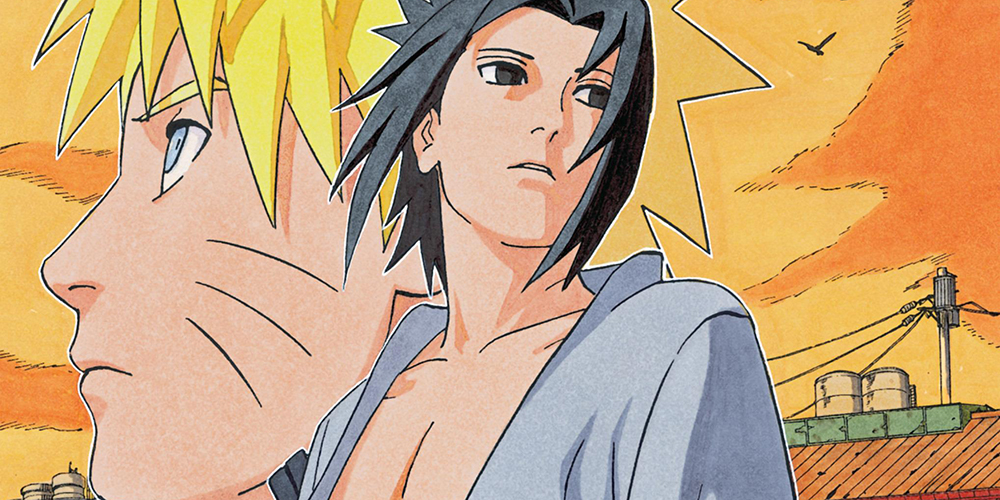

Historia del Manga:
El manga de Naruto Shippuden es la secuela del manga original "Naruto", creado por Masashi Kishimoto. Se
serializó en la revista Weekly Shonen Jump de Shueisha desde 2007 hasta 2014.
La historia sigue las aventuras de Naruto Uzumaki y sus amigos mientras se enfrentan a desafíos cada vez
mayores, incluyendo la búsqueda de Sasuke Uchiha y la lucha contra la organización Akatsuki.
A lo largo del manga, se exploran temas como la amistad, el sacrificio, el valor y la redención,
mientras
los personajes crecen y evolucionan.
Lista de Capítulos:
Los capítulos del manga están organizados en volúmenes que abarcan varios capítulos cada uno.
Cada volumen contiene una parte de la historia principal, incluyendo los arcos argumentales más
importantes.
Los lectores pueden acceder a los capítulos en línea a través de plataformas legales como VIZ Media, o
comprar los volúmenes impresos en tiendas especializadas o en línea.
Análisis de Personajes y Temas:
Naruto Uzumaki: El protagonista principal del manga, cuyo sueño es convertirse en el Hokage de la Aldea
Oculta de la Hoja. A lo largo del manga, Naruto lucha por encontrar su lugar en el mundo ninja y por
traer
la paz a su hogar.
Sasuke Uchiha: El rival de Naruto y miembro del Clan Uchiha. Sasuke busca venganza contra su hermano
mayor,
Itachi Uchiha, y se embarca en un camino oscuro para lograr sus objetivos.
Temas: El manga explora temas como la amistad, el trabajo en equipo, el sacrificio, la redención y la
perseverancia, a través de las experiencias de sus personajes principales y secundarios.
Introducción a las Películas:
Las películas de Naruto Shippuden son producciones cinematográficas basadas en el manga y anime
homónimo.
Ofrecen historias originales que complementan la trama principal del manga y el anime.
Producidas por Studio Pierrot y distribuidas por Toho, las películas ofrecen a los fanáticos la
oportunidad
de disfrutar de nuevas aventuras con sus personajes favoritos fuera de la serie principal.
Lista de Películas:
Las películas de Naruto Shippuden se enumeran en orden cronológico o por fecha de lanzamiento, y cada
una
ofrece una historia independiente.
Algunas de las películas más destacadas incluyen "Naruto Shippuden: La Película", "Naruto Shippuden: La
Torre Perdida", y "Naruto Shippuden: La Voluntad de Fuego".
Los fanáticos pueden acceder a las películas a través de plataformas de streaming legal o adquirirlas en
DVD
o Blu-ray.
Críticas y Opiniones:
Las películas de Naruto Shippuden han recibido críticas mixtas, con algunas elogiadas por su animación y
acción, mientras que otras han sido criticadas por su falta de profundidad en la trama.
Los fanáticos a menudo disfrutan de las películas como una forma de expandir el universo de Naruto y
explorar nuevas aventuras con los personajes.
En el sitio web, se proporcionan reseñas y opiniones de los fanáticos, así como una clasificación de las
películas según la recepción general de la comunidad.
Historia del Anime:
Naruto Shippuden es la continuación directa del anime original "Naruto", basado en el manga homónimo
creado
por Masashi Kishimoto. Se emitió desde 2007 hasta 2017.
La serie sigue las aventuras de Naruto Uzumaki y sus amigos mientras enfrentan desafíos cada vez
mayores,
incluyendo la búsqueda de Sasuke Uchiha y la lucha contra la organización criminal Akatsuki.
A lo largo del anime, se exploran temas como la amistad, el sacrificio, la redención y el crecimiento
personal, mientras los personajes se enfrentan a obstáculos tanto físicos como emocionales.
Lista de Episodios:
Los episodios del anime están organizados en varias temporadas que abarcan diferentes arcos
argumentales.
Cada temporada contiene una parte de la historia principal, con múltiples episodios que desarrollan la
trama
y los personajes.
Los fans pueden acceder a los episodios en línea a través de plataformas legales de streaming o comprar
las
temporadas en DVD o Blu-ray.
Análisis de Artes Visuales y Música:
El anime de Naruto Shippuden es conocido por su impresionante animación, que muestra batallas épicas y
escenas emocionales con gran detalle.
La música, compuesta por Yasuharu Takanashi y otros, complementa perfectamente las escenas y añade
emoción a
la narrativa.
El diseño de personajes y escenarios refleja fielmente el estilo del manga, con cambios sutiles para
adaptarse al medio animado.
Recepción y Legado:
Naruto Shippuden ha sido ampliamente aclamado por los fanáticos y críticos, tanto por su historia
emocionante como por sus personajes memorables.
El anime ha dejado un legado duradero en la cultura popular, influyendo en generaciones de fanáticos y
sirviendo como introducción al mundo del anime y manga para muchos.
A través de reseñas y comentarios de los fanáticos, se muestra la recepción general del anime y su
impacto
en la comunidad.
Copyright © 2024 Naruto Inc. Todos los derechos reservados


Naruto SA CIF B73317494. C/Santa Irene, 4, Ciudad Lineal 28017, Madrid, Comunidad de Madrid. ESPAÑA.